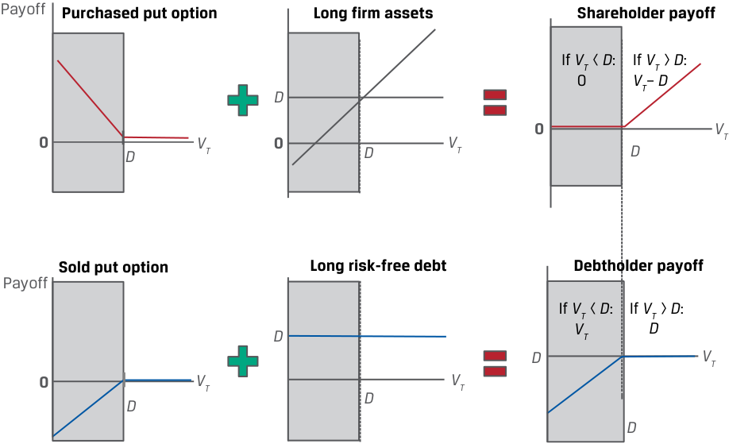
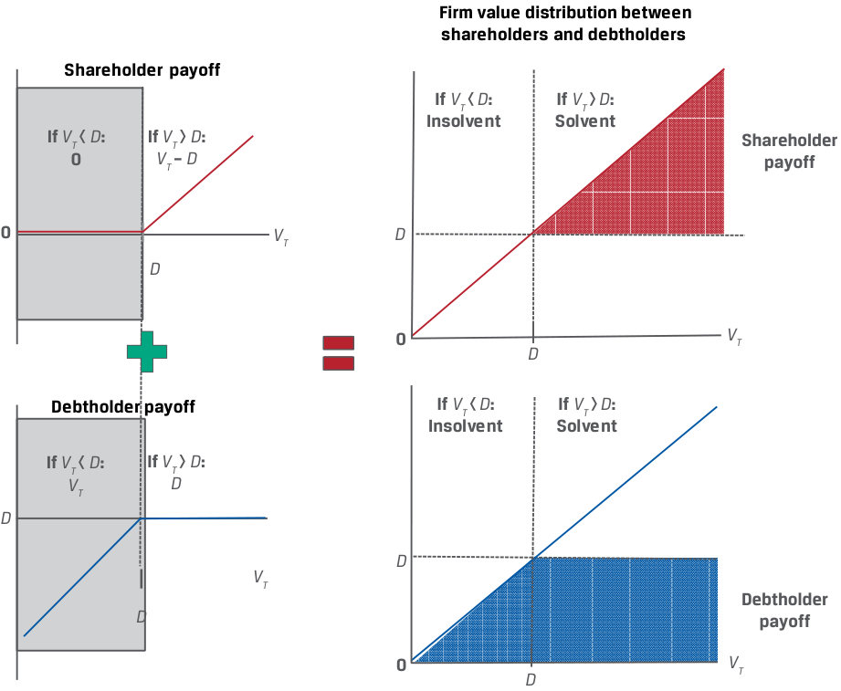

Learning Module 9 Option Replication Using Put–Call Parity - Part 2: Option Put–Call Parity Applications: Firm Value
Volume 7: Derivatives
Learning Module 9 Option Replication Using Put–Call Parity
Part 2/2: Option Put–Call Parity Applications: Firm Value (PDF Pages 217–226)
Tập 7: Công cụ Phái sinh (Derivatives)
Học phần 9: Mô phỏng Quyền chọn Sử dụng Ngang giá Quyền chọn Bán–Quyền chọn Mua (Option Replication Using Put–Call Parity)
Phần 2/2: Các Ứng dụng Ngang giá Quyền chọn Bán–Quyền chọn Mua: Giá trị Doanh nghiệp (Trang PDF 217–226)
EXAMPLE 4
VÍ DỤ 4 (EXAMPLE 4)
VFO Put–Call Forward Parity
Ngang giá Kỳ hạn Quyền chọn Bán–Quyền chọn Mua của VFO (VFO Put–Call Forward Parity)
Consider the Viswan Family Office example using a long forward and a risk-free bond, rather than a cash underlying position as in the prior example. Biomian shares trade at a price ( S 0) of INR295 per share. VFO is considering the purchase of a six-month put on Biomian shares at an exercise price ( X ) of INR265. If VFO’s chief investment officer observes a traded six-month call option price of INR59 per share for the same INR265 exercise price, what should he expect to pay for the put option per share if the relevant risk-free rate is 4%?
Hãy xem xét ví dụ về Văn phòng Quản lý Gia sản Viswan (VFO) sử dụng một hợp đồng mua kỳ hạn và một trái phiếu phi rủi ro, thay vì một vị thế tài sản cơ sở tiền mặt như trong ví dụ trước. Cổ phiếu Biomian giao dịch ở mức giá ($S_0$) là 295 INR mỗi cổ phiếu. VFO đang cân nhắc việc mua một quyền chọn bán kỳ hạn 6 tháng trên cổ phiếu Biomian tại mức giá thực hiện ($X$) là 265 INR. Nếu giám đốc đầu tư của VFO quan sát thấy một quyền chọn mua kỳ hạn 6 tháng đang giao dịch ở mức giá 59 INR mỗi cổ phiếu cho cùng mức giá thực hiện 265 INR, ông ấy nên kỳ vọng trả bao nhiêu cho quyền chọn bán trên mỗi cổ phiếu nếu lãi suất phi rủi ro có liên quan là 4%?
From Equation 5, the put–call forward parity relationship is p 0 – c 0 = [ X – F 0( T )](1 + r )–T .
Từ phương trình ngang giá kỳ hạn quyền chọn bán–quyền chọn mua, mối quan hệ là:
Substituting terms and solving for F 0( T ) = INR300.84 (= INR295(1.04)0.5 ), p 0 – INR59 = (INR265 – INR300.84)(1.04)–0.5 . p 0 = INR23.86.
Thay thế các số hạng và giải tìm $F_0(T) = 300,84\text{ INR} \ (= 295\text{ INR}(1,04)^{0,5})$:
VFO should expect to pay a six-month put option premium of p 0 = INR23.86.
VFO nên kỳ vọng trả mức phí quyền chọn bán kỳ hạn 6 tháng là $p_0 = 23,86\text{ INR}$.
OPTION PUT–CALL PARITY APPLICATIONS: FIRM VALUE
CÁC ỨNG DỤNG NGANG GIÁ QUYỀN CHỌN BÁN–QUYỀN CHỌN MUA: GIÁ TRỊ DOANH NGHIỆP (OPTION PUT–CALL PARITY APPLICATIONS: FIRM VALUE)
6
6
explain put–call parity for European options
giải thích ngang giá quyền chọn bán–quyền chọn mua (put–call parity) đối với quyền chọn kiểu châu Âu
explain put–call forward parity for European options
giải thích ngang giá kỳ hạn quyền chọn bán–quyền chọn mua (put–call forward parity) đối với quyền chọn kiểu châu Âu
The insights established by the put–call parity relationship go well beyond option trading strategies, extending to modeling the value of a firm to describe the interests and financial claims of capital providers—namely, the owners of a firm’s equity and the owners of its debt.
Những góc nhìn sâu sắc được thiết lập bởi mối quan hệ ngang giá quyền chọn bán–quyền chọn mua còn vượt xa các chiến lược giao dịch quyền chọn, mở rộng sang việc mô hình hóa giá trị của một doanh nghiệp nhằm mô tả lợi ích và các quyền đòi nợ tài chính (financial claims) của những nhà cung cấp vốn—cụ thể là những người sở hữu vốn cổ phần (equity) của doanh nghiệp và những người sở hữu khoản nợ (debt) của doanh nghiệp đó.
Assume that at time t = 0, a firm with a market value of V 0 has access to borrowed capital in the form of zero-coupon debt with a face value of D . The market value of the firm’s assets, V 0, is equal to the present value of its outstanding debt obligation, PV( D ), and equity, E 0: V 0 = E 0 + PV( D ).
Giả sử rằng tại thời điểm $t = 0$, một doanh nghiệp có giá trị thị trường là $V_0$ có khả năng tiếp cận nguồn vốn vay dưới hình thức khoản nợ zero-coupon (zero-coupon debt) có mệnh giá là $D$. Giá trị thị trường của các tài sản thuộc doanh nghiệp, $V_0$, bằng giá trị hiện tại của nghĩa vụ nợ đang lưu hành của nó, $\text{PV}(D)$, cộng với vốn cổ phần, $E_0$: $V_0 = E_0 + \text{PV}(D)$.
When the debt matures at T , the firm’s debt and assets are distributed between shareholders and debtholders with two possible outcomes depending on the firm’s value at time T ( VT ):
Khi khoản nợ đáo hạn tại thời điểm $T$, khoản nợ và tài sản của doanh nghiệp được phân bổ giữa các cổ đông (shareholders) và các chủ nợ (debtholders) với hai kết quả có thể xảy ra tùy thuộc vào giá trị của doanh nghiệp tại thời điểm $T$ ($V_T$):
1. Solvency ( VT > D ) : If the value of the firm ( VT ) exceeds the face value of the debt, or VT > D , at time T, we say the firm is solvent and able to return capital to both its shareholders and debtholders.
1. Có khả năng thanh toán (Solvency – $V_T > D$): Nếu giá trị của doanh nghiệp ($V_T$) vượt quá mệnh giá của khoản nợ, hay $V_T > D$, tại thời điểm $T$, chúng ta nói rằng doanh nghiệp có khả năng thanh toán (solvent) và có thể hoàn trả vốn cho cả các cổ đông lẫn các chủ nợ của mình.
-
Debtholders receive D and are repaid in full.
-
Shareholders receive the residual: ET = VT – D .
-
Các chủ nợ nhận được $D$ và được hoàn trả đầy đủ.
-
Các cổ đông nhận được phần còn lại (residual): $E_T = V_T - D$.
2. Insolvency ( VT < D ) : If the value of the firm ( VT ) is below the face value of the debt, or VT < D , at time T , we say the firm is insolvent. In the event of insolvency, shareholders receive nothing and debtholders are owed more than the value of the firm’s assets. Debtholders therefore receive VT to settle their debt claim of D at time T .
2. Mất khả năng thanh toán (Insolvency – $V_T < D$): Nếu giá trị của doanh nghiệp ($V_T$) thấp hơn mệnh giá của khoản nợ, hay $V_T < D$, tại thời điểm $T$, chúng ta nói rằng doanh nghiệp mất khả năng thanh toán (insolvent). Trong trường hợp mất khả năng thanh toán, các cổ đông không nhận được gì và các chủ nợ đang được nợ nhiều hơn giá trị tài sản của doanh nghiệp. Do đó, các chủ nợ nhận được $V_T$ để thanh toán cho quyền đòi nợ trị giá $D$ của họ tại thời điểm $T$.
-
Debtholders have a priority claim on assets and receive VT < D .
-
Shareholders receive the residual, ET = 0.
-
Các chủ nợ có quyền đòi nợ ưu tiên (priority claim) đối với tài sản và nhận được $V_T < D$.
-
Các cổ đông nhận được phần còn lại, $E_T = 0$.
Unlike the risk-free bond shown in the prior put–call parity lesson, the firm has risky debt, because the bondholders receive D only in the case of solvency (when VT > D ). Debtholders therefore demand a premium similar to a put option premium from shareholders in order to assume the risk of insolvency.
Không giống như trái phiếu phi rủi ro được trình bày trong bài học ngang giá quyền chọn bán–quyền chọn mua trước đó, doanh nghiệp có khoản nợ rủi ro (risky debt), bởi vì các trái chủ chỉ nhận được $D$ trong trường hợp doanh nghiệp có khả năng thanh toán (khi $V_T > D$). Do đó, các chủ nợ đòi hỏi một khoản phần bù tương tự như phí quyền chọn bán (put option premium) từ các cổ đông để gánh chịu rủi ro mất khả năng thanh toán.
Shareholders retain unlimited upside potential (if the firm remains solvent and can pay off its debt) and limited downside potential (if the firm becomes insolvent). In contrast, debtholder upside is limited to receiving debt repayment in the event of solvency, and principal and interest are at risk in the downside event of insolvency.
Các cổ đông giữ được tiềm năng tăng giá không giới hạn (unlimited upside potential – nếu doanh nghiệp duy trì được khả năng thanh toán và có thể trả hết nợ) và rủi ro tổn thất phía dưới có giới hạn (limited downside potential – nếu doanh nghiệp mất khả năng thanh toán). Ngược lại, tiềm năng phía trên của chủ nợ bị giới hạn ở việc nhận lại khoản hoàn trả nợ trong trường hợp doanh nghiệp có khả năng thanh toán, còn tiền gốc và tiền lãi đều gặp rủi ro trong sự kiện bất lợi khi doanh nghiệp mất khả năng thanh toán.
Next, we examine the respective payoff profiles at maturity more closely. At t = T ,
Tiếp theo, chúng ta xem xét kỹ hơn hồ sơ kết quả thanh toán tương ứng khi đáo hạn. Tại thời điểm $t = T$:
-
shareholder payoff is max(0, VT – D ) and
-
debtholder payoff is min( VT , D ).
-
kết quả thanh toán của cổ đông (shareholder payoff) là $\max(0, V_T - D)$ và
-
kết quả thanh toán của chủ nợ (debtholder payoff) là $\min(V_T, D)$.
Consider these payoff profiles in terms of options:
Hãy xem xét các hồ sơ kết quả thanh toán này dưới góc độ quyền chọn:
-
Shareholders hold a long position in the underlying firm’s assets ( VT ) and have purchased a put option on firm value ( VT ) with an exercise price of D ; that is, max(0, D – VT ).
-
Debtholders hold a long position in a risk-free bond ( D ) and have sold a put option to shareholders on firm value ( VT ) with an exercise price of D .
-
Các cổ đông nắm giữ một vị thế mua đối với tài sản cơ sở của doanh nghiệp ($V_T$) và đã mua một quyền chọn bán trên giá trị doanh nghiệp ($V_T$) với giá thực hiện là $D$; nghĩa là $\max(0, D - V_T)$.
-
Các chủ nợ nắm giữ một vị thế mua một trái phiếu phi rủi ro ($D$) và đã bán một quyền chọn bán cho các cổ đông trên giá trị doanh nghiệp ($V_T$) với giá thực hiện là $D$.
The payoff profiles for shareholders versus debtholders is shown in Exhibit 9.
Hồ sơ kết quả thanh toán của các cổ đông so với các chủ nợ được thể hiện trong Bảng 9 (Exhibit 9).
Exhibit 9: Shareholder and Debtholder Payoff at Time T
Bảng 9: Kết quả Thanh toán của Cổ đông và Chủ nợ tại Thời điểm $T$ (Exhibit 9: Shareholder and Debtholder Payoff at Time $T$)
Construction of Shareholder and Debtholder Payoffs
Xây dựng Kết quả Thanh toán của Cổ đông và Chủ nợ (Construction of Shareholder and Debtholder Payoffs)

Chú thích hình ảnh: - Hàng trên (Cổ đông): Purchased put option (Quyền chọn bán đã mua) + Long firm assets (Mua tài sản doanh nghiệp) = Shareholder payoff (Kết quả thanh toán của cổ đông: nhận $0$ nếu $V_T < D$, nhận $V_T - D$ nếu $V_T > D$). - Hàng dưới (Chủ nợ): Sold put option (Quyền chọn bán đã bán) + Long risk-free debt (Mua khoản nợ phi rủi ro) = Debtholder payoff (Kết quả thanh toán của chủ nợ: nhận $V_T$ nếu $V_T < D$, nhận $D$ nếu $V_T > D$).
Firm Value Distribution Between Shareholders and Debtholders
Phân bổ Giá trị Doanh nghiệp Giữa Cổ đông và Chủ nợ (Firm Value Distribution Between Shareholders and Debtholders)

Chú thích hình ảnh: - Insolvent ($V_T < D$): Mất khả năng thanh toán (Cổ đông nhận $0$, Chủ nợ nhận $V_T$). - Solvent ($V_T > D$): Có khả năng thanh toán (Cổ đông nhận $V_T - D$, Chủ nợ nhận $D$).
Note that the shareholder’s combination of a purchased put option and a long position in the firm’s assets is equivalent to a call option on the firm’s assets. The risky debt held by the debtholders is a combination of the risk-free debt, D , and the put option sold to shareholders.
Lưu ý rằng sự kết hợp của cổ đông giữa một quyền chọn bán đã mua và một vị thế mua đối với tài sản của doanh nghiệp tương đương với một quyền chọn mua (call option) trên tài sản của doanh nghiệp. Khoản nợ rủi ro do các chủ nợ nắm giữ là sự kết hợp giữa khoản nợ phi rủi ro, $D$, và quyền chọn bán đã bán cho các cổ đông.
Revisiting the put–call parity relationship, S 0 + p 0 = c 0 + PV( X ), from Equation 1, we may substitute the value of the firm at time 0 ( V 0) for the underlying asset ( S 0), substitute the debt ( D ) for the risk-free bond ( X ), and solve for V 0 as follows:
Xem xét lại mối quan hệ ngang giá quyền chọn bán–quyền chọn mua, $S_0 + p_0 = c_0 + \text{PV}(X)$, từ Phương trình 1, chúng ta có thể thay thế giá trị của doanh nghiệp tại thời điểm 0 ($V_0$) cho tài sản cơ sở ($S_0$), thay thế khoản nợ ($D$) cho trái phiếu phi rủi ro ($X$), và giải tìm $V_0$ như sau:
V 0 + p 0 = c 0 + PV( D ).
V 0 = c 0 + PV( D ) – p 0. ~~(5)~~
Equation 6 captures the value of the firm’s assets at t = 0 from a shareholder and debtholder perspective. The shareholder has a position with a payoff similar to that of a call option on firm value ( c 0). The debtholder has a position of PV( D ) – p 0, or risk-free debt of the firm plus a sold put option on firm value. The put option ( p 0) may be interpreted as the credit spread on the firm’s debt, or the premium above the risk-free rate the firm must pay to debtholders to assume insolvency risk. This put option increases in value to shareholders as the likelihood of insolvency increases. From a debtholder’s perspective, the more valuable the sold put, the more credit risk is present in the firm’s debt.
Phương trình trên (trong nguyên bản gọi là Equation 6) nắm bắt giá trị tài sản của doanh nghiệp tại thời điểm $t = 0$ dưới góc độ của cổ đông và chủ nợ. Cổ đông có một vị thế với kết quả thanh toán tương tự như của một quyền chọn mua trên giá trị doanh nghiệp ($c_0$). Chủ nợ có một vị thế là $\text{PV}(D) - p_0$, hay khoản nợ phi rủi ro của doanh nghiệp cộng với một quyền chọn bán đã bán (sold put option) trên giá trị doanh nghiệp. Quyền chọn bán ($p_0$) có thể được diễn giải là mức chênh lệch tín dụng (credit spread) đối với khoản nợ của doanh nghiệp, hay phần bù cao hơn mức lãi suất phi rủi ro mà doanh nghiệp phải trả cho các chủ nợ để họ gánh chịu rủi ro mất khả năng thanh toán. Quyền chọn bán này tăng giá trị đối với các cổ đông khi xác suất mất khả năng thanh toán tăng lên. Dưới góc độ của chủ nợ, quyền chọn bán đã bán càng có giá trị lớn thì rủi ro tín dụng hiện diện trong khoản nợ của doanh nghiệp càng nhiều.
QUESTION SET
BỘ CÂU HỎI (QUESTION SET)
Put–Call Forward Parity and Option Applications
Ngang giá Kỳ hạn Quyền chọn Bán–Quyền chọn Mua và Các Ứng dụng Quyền chọn (Put–Call Forward Parity and Option Applications)
- Identify the following statement as true or false, and justify your answer: A key link between put–call parity and put–call forward parity is that the cash underlying position is replaced by a synthetic underlying position using a forward purchase and a risk-free bond.
- Xác định phát biểu sau đây là đúng hay sai, và giải thích câu trả lời của bạn: Một mối liên kết then chốt giữa ngang giá quyền chọn bán–quyền chọn mua và ngang giá kỳ hạn quyền chọn bán–quyền chọn mua là vị thế tài sản cơ sở tiền mặt được thay thế bằng một vị thế tài sản cơ sở tổng hợp (synthetic underlying position) sử dụng một giao dịch mua kỳ hạn và một trái phiếu phi rủi ro.
Solution:
Lời giải:
The statement is true. The replacement of the cash underlying position by a synthetic underlying position using a forward purchase and a risk-free bond links call option, put option, and forward prices under put–call forward parity.
Phát biểu này là đúng. Việc thay thế vị thế tài sản cơ sở tiền mặt bằng một vị thế tài sản cơ sở tổng hợp sử dụng một giao dịch mua kỳ hạn và một trái phiếu phi rủi ro đã liên kết giá quyền chọn mua, giá quyền chọn bán, và giá kỳ hạn theo ngang giá kỳ hạn quyền chọn bán–quyền chọn mua (put–call forward parity).
-
Identify which of the following positions has the same no-arbitrage value as which portfolio under put–call forward parity:
-
Long call option ( c 0) A. Forward sale, long risk-free bond, and long call option
-
Long risk-free bond ( X (1 + r )–T )
-
Long put option ( p 0)
-
B. Forward purchase, long put option, and short risk-free bond
-
C. Long forward purchase, short call option, and long put option
- Xác định vị thế nào sau đây có cùng giá trị không kinh doanh chênh lệch giá với danh mục đầu tư nào theo ngang giá kỳ hạn quyền chọn bán–quyền chọn mua:
Solution:
| Vị thế | Danh mục đầu tư tương đương |
|---|---|
| 1. Mua quyền chọn mua ($c_0$) | A. Bán kỳ hạn (forward sale), mua trái phiếu phi rủi ro, và mua quyền chọn mua |
| 2. Mua trái phiếu phi rủi ro ($X(1 + r)^{-T}$) | B. Mua kỳ hạn (forward purchase), mua quyền chọn bán, và bán trái phiếu phi rủi ro |
| 3. Mua quyền chọn bán ($p_0$) | C. Mua hợp đồng kỳ hạn (long forward purchase), bán quyền chọn mua, và mua quyền chọn bán |
Recall that the put–call forward parity relationship may be expressed as
Lời giải:
Hãy nhớ lại rằng mối quan hệ ngang giá kỳ hạn quyền chọn bán–quyền chọn mua có thể được biểu diễn là:
- F 0( T )(1 + r )–T + p 0 = c 0 + X (1 + r )–T .
-
B is correct. A long call option position is the no-arbitrage equivalent of a forward purchase, a long put option, and a short risk-free bond position.
-
C is correct. A long risk-free bond position is equivalent to a long forward purchase, a short call option, and a long put option.
-
A is correct. A long put option is equivalent to a forward sale, a long riskfree bond, and a long call option.
-
Describe the cash flows at the time of option expiration for a synthetic protective put.
- $F_0(T)(1 + r)^{-T} + p_0 = c_0 + X(1 + r)^{-T}$.
-
B là đáp án đúng. Một vị thế mua quyền chọn mua là tương đương không kinh doanh chênh lệch giá với một giao dịch mua kỳ hạn, mua quyền chọn bán, và bán trái phiếu phi rủi ro.
-
C là đáp án đúng. Một vị thế mua trái phiếu phi rủi ro tương đương với một vị thế mua hợp đồng kỳ hạn, bán quyền chọn mua, và mua quyền chọn bán.
-
A là đáp án đúng. Một vị thế mua quyền chọn bán tương đương với một giao dịch bán kỳ hạn, mua trái phiếu phi rủi ro, và mua quyền chọn mua.
-
Mô tả các dòng tiền vào thời điểm đáo hạn quyền chọn đối với một quyền chọn bán bảo vệ tổng hợp (synthetic protective put).
Solution:
Lời giải:
A synthetic protective put is the combination of a synthetic underlying position (using a forward purchase and a long risk-free bond position equal to the exercise price) and a purchased put.
Một quyền chọn bán bảo vệ tổng hợp là sự kết hợp giữa một vị thế tài sản cơ sở tổng hợp (sử dụng một giao dịch mua kỳ hạn và một vị thế mua trái phiếu phi rủi ro có mệnh giá bằng giá kỳ hạn/giá thực hiện) và một quyền chọn bán đã mua.
At the time of option expiration, time T , there are two possible scenarios:
Tại thời điểm quyền chọn đáo hạn, thời điểm $T$, có hai kịch bản có thể xảy ra:
Put option exercised ( X > ST ): If the put option is exercised, an investor receives ( X – ST ). The risk-free asset returns F0(T), and the forward purchase returns ST – F 0( T ).
Quyền chọn bán được thực hiện ($X > S_T$): Nếu quyền chọn bán được thực hiện, nhà đầu tư nhận được $(X - S_T)$. Tài sản phi rủi ro mang lại $F_0(T)$, và giao dịch mua kỳ hạn mang lại $S_T - F_0(T)$.
The total return equals ( X – ST ) + [ ST – F 0( T )] + F 0( T ) = X .
Tổng số tiền thu về bằng $(X - S_T) + [S_T - F_0(T)] + F_0(T) = X$.
Put option unexercised ( X ≤ ST ): If the put option is unexercised, it will expire worthless. The risk-free asset returns F 0( T ), and the forward purchase returns ST – F 0( T ).
Quyền chọn bán không được thực hiện ($X \le S_T$): Nếu quyền chọn bán không được thực hiện, nó sẽ hết hạn mà không có giá trị. Tài sản phi rủi ro mang lại $F_0(T)$, và giao dịch mua kỳ hạn mang lại $S_T - F_0(T)$.
The total return equals [ ST – F 0( T )] + F0( T ) = ST .
Tổng số tiền thu về bằng $[S_T - F_0(T)] + F_0(T) = S_T$.
- Describe how a debtholder’s position may be considered similar to the sale of a put option on firm value.
- Mô tả cách thức vị thế của một chủ nợ (debtholder’s position) có thể được coi là tương tự như việc bán một quyền chọn bán trên giá trị doanh nghiệp.
Solution:
Lời giải:
- If the value of the firm ( VT ) is below the face value of its debt outstanding, or VT < D at time T , we say the firm is insolvent and debtholders receive less than the face value ( D ) to settle their debt claim. Stated differently, a debtholder’s payoff is min( D , VT ) = D – max(0, D – VT ) and equals the debt face value ( D ) minus a put option on firm value ( VT ) with an exercise price of D , which represents a sold put on firm value.
- Nếu giá trị của doanh nghiệp ($V_T$) thấp hơn mệnh giá khoản nợ đang lưu hành của nó, hay $V_T < D$ tại thời điểm $T$, chúng ta nói rằng doanh nghiệp mất khả năng thanh toán (insolvent) và các chủ nợ nhận được ít hơn mệnh giá ($D$) để thanh toán cho quyền đòi nợ của họ. Nói cách khác, kết quả thanh toán của chủ nợ là $\min(D, V_T) = D - \max(0, D - V_T)$ và bằng mệnh giá khoản nợ ($D$) trừ đi một quyền chọn bán trên giá trị doanh nghiệp ($V_T$) với giá thực hiện là $D$, đại diện cho một quyền chọn bán đã bán (sold put) trên giá trị doanh nghiệp.
~~PRACTICE PROBLEMS~~
BÀI TẬP THỰC HÀNH (PRACTICE PROBLEMS)
The following information relates to questions 1-6
Thông tin sau đây liên quan đến các câu hỏi từ 1 đến 6
South China Sprintwyck Investments (SCSI)
South China Sprintwyck Investments (SCSI)
South China Sprintwyck Investments (SCSI) has a Chinese equity portfolio that has outperformed in the first half of the year due to an overweight position in health care industry shares. SCSI is considering option-based alternatives for one of its current overweight positions, ChinaWell Inc. (CWI). CWI has a current price ( S 0) of CNY127.50 and pays no dividends. The current risk-free rate is 4%. You are a new SCSI analyst hired to evaluate several alternatives for CWI stock.
South China Sprintwyck Investments (SCSI) có một danh mục đầu tư cổ phiếu Trung Quốc đã đạt hiệu quả vượt trội trong nửa đầu năm nhờ vị thế tỷ trọng cao (overweight position) ở các cổ phiếu ngành chăm sóc sức khỏe. SCSI đang cân nhắc các phương án dựa trên quyền chọn cho một trong những vị thế tỷ trọng cao hiện tại của mình là ChinaWell Inc. (CWI). CWI có mức giá hiện tại ($S_0$) là 127,50 CNY và không trả cổ tức. Lãi suất phi rủi ro hiện tại là 4%. Bạn là một chuyên viên phân tích mới của SCSI được tuyển dụng để đánh giá một số phương án cho cổ phiếu CWI.
1. SCSI is considering the sale of a three-month call on CWI shares. If you observe a traded put price with the same underlying details, which of the following statements best describes how to derive the no-arbitrage call price?
1. SCSI đang cân nhắc việc bán một quyền chọn mua kỳ hạn 3 tháng trên cổ phiếu CWI. Nếu bạn quan sát thấy một mức giá quyền chọn bán đang được giao dịch có cùng các thông số tài sản cơ sở, phát biểu nào sau đây mô tả đúng nhất cách thức suy ra mức giá quyền chọn mua không kinh doanh chênh lệch giá?
-
A. Using put–call parity, the call price may be derived by subtracting the traded put price from the underlying price less the present value of the exercise price.
-
B. Using put–call parity, the call price may be derived by adding the traded put price to the underlying price less the present value of the exercise price.
-
C. Using put–call parity, the call price may be derived by adding the traded put price to the present value of the exercise price minus the underlying price.
-
A. Sử dụng ngang giá quyền chọn bán–quyền chọn mua, giá quyền chọn mua có thể được suy ra bằng cách lấy giá tài sản cơ sở trừ đi giá trị hiện tại của giá thực hiện rồi trừ đi giá quyền chọn bán đang giao dịch.
-
B. Sử dụng ngang giá quyền chọn bán–quyền chọn mua, giá quyền chọn mua có thể được suy ra bằng cách cộng giá quyền chọn bán đang giao dịch vào phần chênh lệch giữa giá tài sản cơ sở trừ đi giá trị hiện tại của giá thực hiện.
-
C. Sử dụng ngang giá quyền chọn bán–quyền chọn mua, giá quyền chọn mua có thể được suy ra bằng cách cộng giá quyền chọn bán đang giao dịch vào phần chênh lệch giữa giá trị hiện tại của giá thực hiện trừ đi giá tài sản cơ sở.
2. Due to the recent sharp rise in CWI’s share price, SCSI is recommending that clients consider protective put strategies for three- to six-month tenors. If you observe that a six-month CWI call option at an exercise price of CNY120 is trading at a price of CNY22.60, which answer is closest to what you would expect to pay for a six-month put option with the same underlying terms?
2. Do sự tăng vọt gần đây của giá cổ phiếu CWI, SCSI đang khuyến nghị khách hàng cân nhắc các chiến lược quyền chọn bán bảo vệ (protective put strategies) cho các kỳ hạn từ 3 đến 6 tháng. Nếu bạn quan sát thấy một quyền chọn mua cổ phiếu CWI kỳ hạn 6 tháng tại mức giá thực hiện 120 CNY đang giao dịch ở mức giá 22,60 CNY, đáp án nào gần nhất với mức giá bạn kỳ vọng sẽ trả cho một quyền chọn bán kỳ hạn 6 tháng có cùng các điều khoản cơ sở?
-
A. CNY15.10
-
B. CNY9.83
-
C. CNY12.77
-
A. 15,10 CNY
-
B. 9,83 CNY
-
C. 12,77 CNY
3. You realize that the six-month put option on CWI shares is overpriced relative to the no-arbitrage price from Question 2. Which of the following statements best describes the steps you would take to earn a riskless arbitrage profit under this scenario?
3. Bạn nhận ra rằng quyền chọn bán kỳ hạn 6 tháng trên cổ phiếu CWI đang bị định giá cao (overpriced) so với mức giá không kinh doanh chênh lệch giá từ Câu hỏi 2. Phát biểu nào sau đây mô tả đúng nhất các bước bạn sẽ thực hiện để kiếm được một khoản lợi nhuận kinh doanh chênh lệch giá phi rủi ro dưới kịch bản này?
-
A. Sell the six-month put option and sell CWI short, investing the proceeds in a call option and a risk-free bond.
-
B. Sell the six-month put option, buy a call option, and borrow at the risk-free rate to buy CWI shares.
-
C. Sell the six-month put option, buy a call option, enter a forward purchase of CWI, and invest in a risk-free bond.
-
A. Bán quyền chọn bán kỳ hạn 6 tháng và bán khống cổ phiếu CWI, đầu tư số tiền thu được vào một quyền chọn mua và một trái phiếu phi rủi ro.
-
B. Bán quyền chọn bán kỳ hạn 6 tháng, mua một quyền chọn mua, và đi vay ở mức lãi suất phi rủi ro để mua cổ phiếu CWI.
-
C. Bán quyền chọn bán kỳ hạn 6 tháng, mua một quyền chọn mua, tham gia vào một giao dịch mua kỳ hạn cổ phiếu CWI, và đầu tư vào một trái phiếu phi rủi ro.
4. In her most recent research note on CWI, SCSI’s equity analyst specifically mentions an increase in CWI’s leverage ratio as a reason for her bearish outlook on the stock. Applying the put–call parity relationship to the value of the firm, which of the following statements most accurately describes the CWI outlook in terms of option pricing?
4. Trong bản ghi chú nghiên cứu gần đây nhất của mình về CWI, chuyên viên phân tích cổ phiếu của SCSI đặc biệt đề cập đến sự gia tăng trong tỷ số đòn bẩy (leverage ratio) của CWI như một lý do cho triển vọng bi quan (bearish outlook) của cô ấy đối với cổ phiếu này. Áp dụng mối quan hệ ngang giá quyền chọn bán–quyền chọn mua cho giá trị của doanh nghiệp, phát biểu nào sau đây mô tả chính xác nhất triển vọng của CWI dưới góc độ định giá quyền chọn?
-
A. The shareholder payoff has improved versus debtholders, because they have sold a put option on the firm value that has appreciated.
-
B. The debtholder payoff has deteriorated versus the shareholders, because they are effectively short a put option on the value of the firm equal to the value of debt, which has appreciated in value.
-
C. The shareholder payoff has improved versus the debtholders, because the debtholders have sold a call option on the firm’s assets to the shareholders.
-
A. Kết quả thanh toán của cổ đông đã được cải thiện so với các chủ nợ, bởi vì họ đã bán một quyền chọn bán trên giá trị doanh nghiệp vốn đã tăng giá trị.
-
B. Kết quả thanh toán của chủ nợ đã xấu đi so với các cổ đông, bởi vì về thực chất họ đang giữ vị thế bán một quyền chọn bán trên giá trị của doanh nghiệp với giá thực hiện bằng giá trị khoản nợ, và quyền chọn bán này đã tăng giá trị.
-
C. Kết quả thanh toán của cổ đông đã được cải thiện so với các chủ nợ, bởi vì các chủ nợ đã bán một quyền chọn mua trên tài sản của doanh nghiệp cho các cổ đông.
5. Which of the following choices best describes how SCSI could replicate a long risk-free bond return using a forward contract on CWI and call and put options on CWI?
5. Lựa chọn nào sau đây mô tả đúng nhất cách thức SCSI có thể mô phỏng tỷ suất sinh lợi của một vị thế mua trái phiếu phi rủi ro bằng cách sử dụng một hợp đồng kỳ hạn trên cổ phiếu CWI cùng với các quyền chọn mua và quyền chọn bán trên cổ phiếu CWI?
-
A. Short a forward contract on CWI, short a put option on CWI, and long a call option on CWI
-
B. Long a forward contract on CWI, long a put option on CWI, and short a call option on CWI
-
C. Long a forward contract on CWI, long a put option on CWI, and long a call option on CWI
-
A. Bán một hợp đồng kỳ hạn trên CWI, bán một quyền chọn bán trên CWI, và mua một quyền chọn mua trên CWI
-
B. Mua một hợp đồng kỳ hạn trên CWI, mua một quyền chọn bán trên CWI, và bán một quyền chọn mua trên CWI
-
C. Mua một hợp đồng kỳ hạn trên CWI, mua một quyền chọn bán trên CWI, và mua một quyền chọn mua trên CWI
6. SCSI observes that a 3-month call option on CWI with an exercise price of CNY 130 trades at a premium of CNY 3. A 3-month forward contract on CWI trades at a forward price of CNY 128.76. Which of the following choices is closest to the correct premium for a 3-month put option with an exercise price of CNY 130 on CWI?
6. SCSI quan sát thấy một quyền chọn mua kỳ hạn 3 tháng trên CWI với giá thực hiện 130 CNY giao dịch ở mức phí quyền chọn là 3 CNY. Một hợp đồng kỳ hạn 3 tháng trên CWI giao dịch ở mức giá kỳ hạn là 128,76 CNY. Lựa chọn nào sau đây gần nhất với mức phí quyền chọn đúng cho một quyền chọn bán kỳ hạn 3 tháng có giá thực hiện 130 CNY trên CWI?
-
A. CNY 4.20
-
B. CNY 1.20
-
C. CNY 0.50
-
A. 4,20 CNY
-
B. 1,20 CNY
-
C. 0,50 CNY
~~SOLUTIONS~~
LỜI GIẢI (SOLUTIONS)
- The correct answer is B. From Equation 1, the put–call parity relationship is S 0 + p 0 = c 0 + X (1 + r )–T .
- Đáp án đúng là B. Từ Phương trình 1, mối quan hệ ngang giá quyền chọn bán–quyền chọn mua là:
We can rearrange these terms to solve for c 0: c 0 = S 0 + p 0 – X (1 + r )–T , which shows that the call price may be derived by adding the traded put price to the underlying price less the present value of the exercise price.
- The correct answer is C. If c 0 = CNY22.60, S 0 = CNY127.50, and PV( X ) = CNY117.67 (= 120(1.04)–0.5 ), we can solve for p 0 using put–call parity: S 0 + p 0 = c 0 + X (1 + r )–T .
Chúng ta có thể sắp xếp lại các số hạng này để giải tìm $c_0$: $c_0 = S_0 + p_0 - X(1 + r)^{-T}$, điều này cho thấy giá quyền chọn mua có thể được suy ra bằng cách cộng giá quyền chọn bán đang giao dịch vào phần chênh lệch giữa giá tài sản cơ sở trừ đi giá trị hiện tại của giá thực hiện.
p 0 = c 0 + X (1 + r )–T – S 0.
- Đáp án đúng là C. Nếu $c_0 = 22,60\text{ CNY}$, $S_0 = 127,50\text{ CNY}$, và $\text{PV}(X) = 117,67\text{ CNY} \ (= 120(1,04)^{-0,5})$, chúng ta có thể giải tìm $p_0$ bằng cách sử dụng ngang giá quyền chọn bán–quyền chọn mua:
CNY12.77 = 22.60 + 117.67 – 127.50.
- Đáp án đúng là A. Vì quyền chọn bán đang bị định giá cao (overpriced), chúng ta sẽ bán nó để thu phần chênh lệch giữa mức giá bán và mức giá không kinh doanh chênh lệch giá. Mối quan hệ ngang giá quyền chọn bán–quyền chọn mua, từ Phương trình 1, là:
- $S_0 + p_0 = c_0 + X(1 + r)^{-T}$.
- The correct answer is A. Since the put option is overpriced, we would sell it to earn the difference between the price at which it is sold and the no-arbitrage price. The put–call parity relationship, from Equation 1, is
- S 0 + p 0 = c 0 + X (1 + r )–T .
Chúng ta có thể sắp xếp lại phương trình này để chứng minh rằng giá trị quyền chọn bán tương đương với một vị thế mua quyền chọn mua, một vị thế mua trái phiếu phi rủi ro, và một vị thế bán khống cổ phiếu CWI:
We can rearrange this to demonstrate that the put option value is equivalent to a long call option, a long risk-free bond, and a short position in CWI shares:
p 0 = c 0 + X (1 + r )–T – S 0.
Đáp án A phản ánh sự kết hợp giữa mua trái phiếu phi rủi ro, mua quyền chọn mua và bán khống cổ phiếu CWI này, vốn có kết quả thanh toán tổng hợp khớp với kết quả thanh toán của quyền chọn bán khi đáo hạn, trong khi Đáp án B liên quan đến vị thế mua tiền mặt đối với CWI và Đáp án C liên quan đến vị thế mua tổng hợp (mua kỳ hạn) đối với cổ phiếu CWI.
Answer A reflects this long risk-free bond and short CWI combination, which has a payoff of X – ST at expiration matching that of the put payoff, whereas Answer B involves a long cash position in CWI and Answer C involves a long synthetic (forward purchase) position in CWI stock.
- Đáp án đúng là B. Kết quả thanh toán của chủ nợ đã xấu đi so với các cổ đông, bởi vì về thực chất họ đang giữ vị thế bán một quyền chọn bán trên giá trị của doanh nghiệp với giá thực hiện bằng giá trị khoản nợ, và quyền chọn bán này đã tăng giá trị (khi đòn bẩy nợ tăng lên làm tăng rủi ro mất khả năng thanh toán).
- Kết quả thanh toán của chủ nợ là $\min(D, V_T) = D - \max(0, D - V_T)$ và bằng mệnh giá khoản nợ ($D$) trừ đi một quyền chọn bán trên giá trị doanh nghiệp ($V_T$) với giá thực hiện là $D$. Đáp án A không đúng vì các chủ nợ, chứ không phải các cổ đông, mới là người đã bán quyền chọn bán. C không đúng vì các cổ đông sở hữu một quyền chọn mua, nhưng nó không phải do các chủ nợ bán theo cấu trúc vị thế riêng của chủ nợ.
- B là đáp án đúng. Sử dụng phương trình ngang giá kỳ hạn quyền chọn bán–quyền chọn mua như sau:
- The correct answer is B. The debtholder payoff has deteriorated versus the shareholders, because they are effectively short a put option on the value of the firm equal to the value of debt, which has appreciated in value.
- The debtholder payoff is min( D , VT ) = D – max(0, D – VT ) and equals the debt face value ( D ) minus a put option on firm value ( VT ) with an exercise price of D . Answer A is incorrect because the debtholders, not the shareholders, have sold a put option. C is incorrect, because the shareholders own a call option, but it is not sold by the debtholders.
- B is correct. Using the put–call forward parity equation as follows: F 0( T )(1 + r )–T + p 0 = c 0 + X (1 + r )–T
Và sắp xếp lại để giải tìm trái phiếu phi rủi ro mang lại kết quả sau:
And rearranging to solve for the risk-free bond gives the following:
- $F_0(T)(1 + r)^{-T} + p_0 - c_0 = X(1 + r)^{-T}$.
- F 0( T )(1 + r )–T + p 0 – c 0 = X (1 + r )–T .
The signs on the forward contract and put option positions are both positive, indicating long positions. The negative sign on the call option indicates a short position.
Dấu của vị thế hợp đồng kỳ hạn và vị thế quyền chọn bán đều là dấu dương, biểu thị các vị thế mua (long positions). Dấu âm ở quyền chọn mua biểu thị một vị thế bán (short position).
- A is correct. The solution can be derived through either put–call parity or put– call forward parity. You can demonstrate the solution using put–call forward parity:
- F 0( T )(1 + r )–T + p 0 = c 0 + X (1 + r )–T 128.76(1.04)–0.25 + p 0 = 3 + 130(1.04)–0.25
- A là đáp án đúng. Lời giải có thể được suy ra thông qua ngang giá quyền chọn bán–quyền chọn mua hoặc ngang giá kỳ hạn quyền chọn bán–quyền chọn mua. Bạn có thể chứng minh lời giải bằng cách sử dụng ngang giá kỳ hạn quyền chọn bán–quyền chọn mua:
- $F_0(T)(1 + r)^{-T} + p_0 = c_0 + X(1 + r)^{-T}$
- $128,76(1,04)^{-0,25} + p_0 = 3 + 130(1,04)^{-0,25}$
127.50 + p 0 = 131.73 p 0 = 4.23.
- $127,50 + p_0 = 131,73 \implies p_0 = 4,23\text{ CNY}$ (gần nhất với 4,20 CNY).